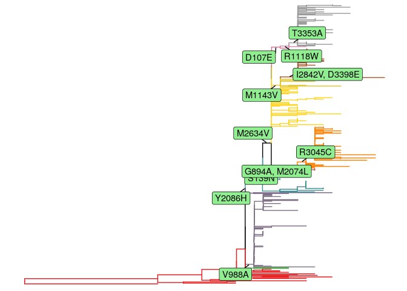
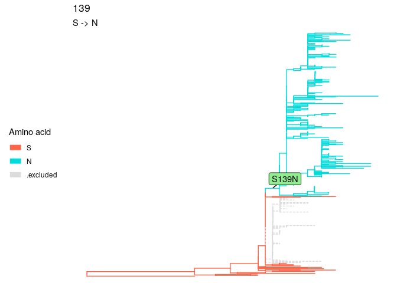
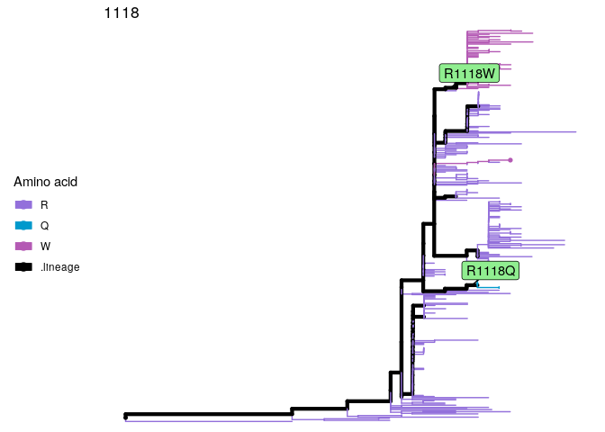

The below demonstrates the result of phylogeny-based sequence clustering for a H3N2 virus dataset (included in the package)
library(sitePath)
data(h3n2_align) # load the H3N2 sequences
data(h3n2_tree) # load the corresponding phylogenetic tree
options(list("cl.cores" = 10)) # Use 10 cores for multiprocessing
paths <- lineagePath(h3n2_tree, alignment = h3n2_align, Nmin = 0.05)## The "tree" object is not bifurcated and resolved by "multi2di" function.
## Using 10 cores..
## Multiprocessing ended.
minEntropy <- sitesMinEntropy(paths)## Using 10 cores..
## Multiprocessing ended.
p1 <- plotSingleSite(paths, site = 208) # The site polymorphism of site 208 on the tree
p2 <- plotSingleSite(minEntropy, site = 208) # The result of clustering using site 208
gridExtra::grid.arrange(p1, p2, ncol = 2)
grp1 <- extractTips(paths, 208) # Grouping result using site polymorphism only
grp2 <- extractTips(minEntropy, 208) # Phylogeny-based clustering resultInstallation
R programming language >= 4.1.0 is required to use sitePath.
The stable release is available on Bioconductor.
if (!requireNamespace("BiocManager", quietly = TRUE))
install.packages("BiocManager")
BiocManager::install("sitePath")The installation from GitHub is in experimental stage but gives the newest feature:
if (!requireNamespace("remotes", quietly = TRUE))
install.packages("remotes")
remotes::install_github("wuaipinglab/sitePath")QuickStart
The following is a quick tutorial on how to use sitePath to find fixation and parallel sites including how to import data, run analysis and visualization of the results.
1. Data preparation
You need a tree and a MSA (multiple sequence alignment) file and the sequence names have to be matched!
library(sitePath) # Load the sitePath package
# The path to your tree and MSA files
tree_file <- system.file("extdata", "ZIKV.newick", package = "sitePath")
alignment_file <- system.file("extdata", "ZIKV.fasta", package = "sitePath")
tree <- read.tree(tree_file) # Read the tree file into R
align <- read.alignment(alignment_file, format = "fasta") # Read the MSA file into R2. Run analysis
Nmin and minSNP are the respective parameters for finding fixation and parallel sites (18 and 1 are used as an example for this dataset). The default values will be used if you don’t specify them.
options(list("cl.cores" = 1)) # Set this bigger than 1 to use multiprocessing
paraFix <- paraFixSites(tree, alignment = align, Nmin = 18, minSNP = 1) # Run analysis to find fixation and parallel sites
paraFix## This is a 'paraFixSites' object
##
## fixation sites:
## 139, 894, 2074, 2086, 2634, 3045, 988, 1143, 2842, 3398, 107, 1118, 3353
##
## parallel sites:
## 105, 2292, 1264, 918, 1226, 1717, 988, 2611, 2787, 2749, 3328, 3162, 1857, 2445, 358, 1404, 3046, 791, 1180, 1016, 1171, 1327, 3076, 106, 2357, 916, 1303, 969, 573, 2909, 2122, 940
##
## paraFix sites:
## 9883. Fixation sites
Use allSitesName and set type as “fixation” to retrieve fixation sites name
allSitesName(paraFix, type = "fixation")## [1] "139" "894" "2074" "2086" "2634" "3045" "988" "1143" "2842" "3398"
## [11] "107" "1118" "3353"Use plotFixationSites to view fixation sites
plotFixationSites(paraFix) # View all fixation sites on the tree
plotFixationSites(paraFix, site = 139) # View a single site
4. Parallel sites
Use allSitesName and set type as “parallel” to retrieve parallel sites name
allSitesName(paraFix, type = "parallel")## [1] "105" "2292" "1264" "918" "1226" "1717" "988" "2611" "2787" "2749"
## [11] "3328" "3162" "1857" "2445" "358" "1404" "3046" "791" "1180" "1016"
## [21] "1171" "1327" "3076" "106" "2357" "916" "1303" "969" "573" "2909"
## [31] "2122" "940"Use plotParallelSites to view parallel sites
plotParallelSites(paraFix) # View all parallel sites on the tree
plotParallelSites(paraFix, site = 105) # View a single site
Read more
The above uses wrapper functions but the analysis can be dissembled into step functions (so you can view the result of each step and modify parameters). Click here for a more detailed tutorial.
Getting help
Post on Bioconductor support site if having trouble using sitePath. Or open an issue if a bug is found.